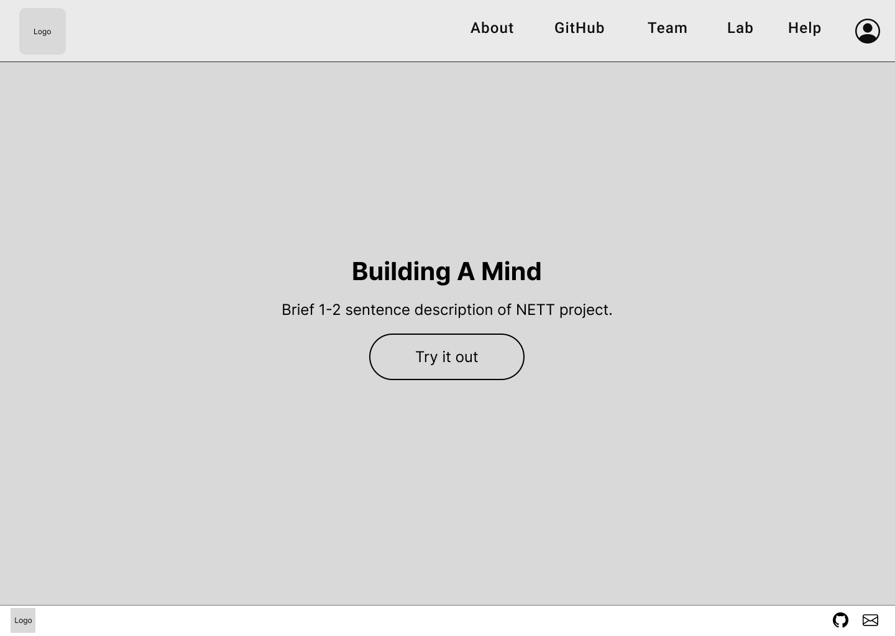
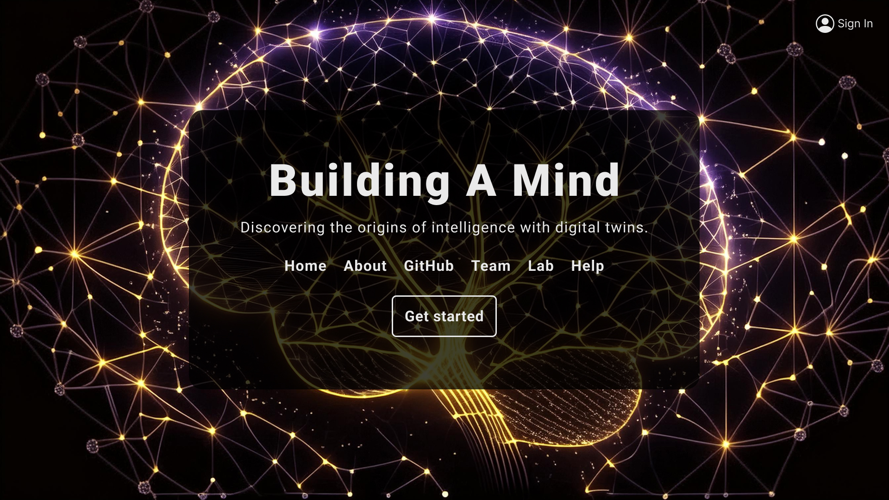

The Interface
The web interface provides an accessible way for users to explore the Building A Mind research and documentation. It features a clean, modern design that makes complex computer vision concepts approachable for beginners.
Project Overview
This project involved creating a comprehensive web interface that serves as both an educational resource and a gateway to the Building A Mind research. The interface includes documentation, research papers, and interactive elements to help users understand the computer vision models.
